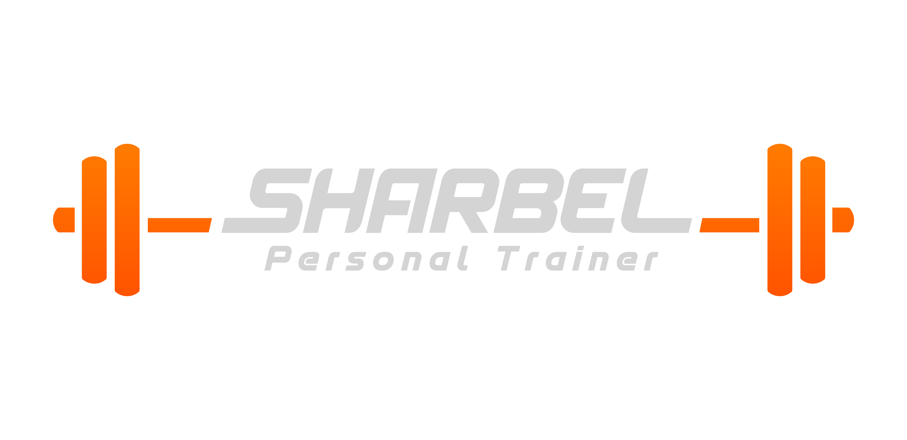

תפריט ארוחות
התפריט עבור:
יזן סועד
ארוחה ראשונה
ארוחת ביניים
ארוחה שנייה
ערכים תזונתיים
ארוחה ראשונה
חלבון – לבחור אופציה אחת (לאחר הבישול):
230 גרם חזה עוף / פסטרמה 5% / פילה עוף / כבד עוף
6 ביצים קשות (חצי מהן עם הצהוב)
300 גרם גבינה בולגרית 5%
160 גרם גבינה בולגרית 9%
340 גרם טונה (משימורים במים)
200 גרם פילה עגל / המבורגר (כבב / סינטה / אנטריקוט)
פחמימה – לבחור אופציה אחת (לאחר הבישול):
200 גרם אורז לבן
210 גרם קוסקוס
160 גרם פסטה
270 גרם תפוח אדמה
5 פרוסות לחם קל (עד 50 קלוריות ליחידה)
100 גרם טורטייה לבנונית (שניים קטנות או אחת גדולה)
פיתה לבנה (פיתה אחת)
260 גרם בטטה
70 גרם שיבולת שועל
90 גרם לחמנייה לבנה (לחמנייה אחת)
תוספת מומלצת:
סלט ירקות 180 גרם (מומלץ להוסיף ירקות ירוקים).
ארוחת ביניים
אופציות:
4 פרוסות לחם קל (עד 50 קלוריות ליחידה) / 6 פריכיות אורז עם:
100 גרם פסטרמה דלת שומן
90 גרם כתף בקר
4 חלבוני ביצה (לבן בלבד)
80 גרם גבינה 5%
120 גרם קוטג' 5% / גבינה לבנה 5% / לבנה 5%
100 גרם טונה במים
שייק חלבון:
200 מ"ל מים + כפית חלבון WHEY
1 קופסה PRO/GO (עד 150 קלוריות)
חטיף חלבון (עד 350 קלוריות)
ארוחה שנייה
חלבון – לבחור אופציה אחת (לאחר הבישול):
230 גרם חזה עוף / פסטרמה 5% / פילה עוף / כבד עוף
6 ביצים קשות (חצי מהן עם הצהוב)
300 גרם גבינה בולגרית 5%
160 גרם גבינה בולגרית 9%
340 גרם טונה (משימורים במים)
200 גרם פילה עגל / המבורגר (כבב / סינטה / אנטריקוט)
פחמימה – לבחור אופציה אחת (לאחר הבישול):
200 גרם אורז לבן
210 גרם קוסקוס
160 גרם פסטה
270 גרם תפוח אדמה
5 פרוסות לחם קל (עד 50 קלוריות ליחידה)
100 גרם טורטייה לבנונית (שניים קטנות או אחת גדולה)
פיתה לבנה (פיתה אחת)
260 גרם בטטה
70 גרם שיבולת שועל
90 גרם לחמנייה לבנה (לחמנייה אחת)
תוספת מומלצת:
סלט ירקות 180 גרם (מומלץ להוסיף ירקות ירוקים).